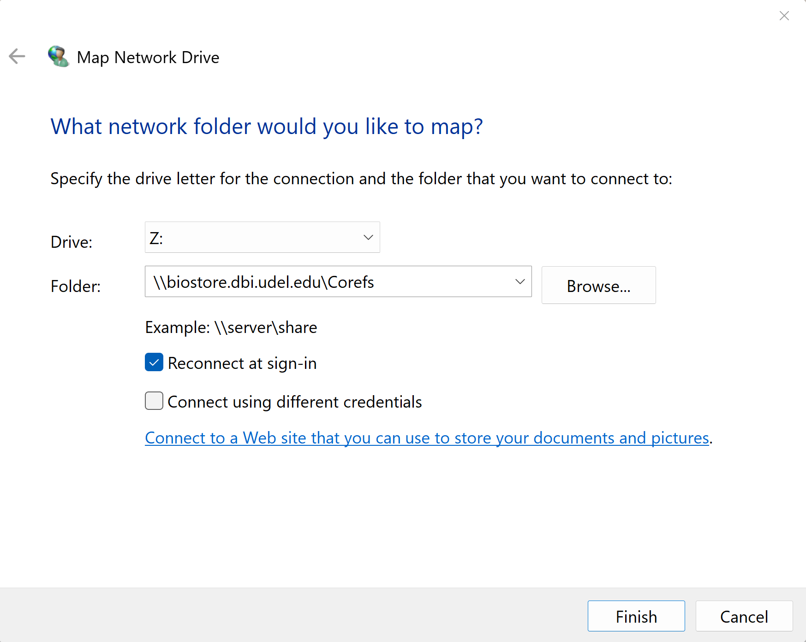
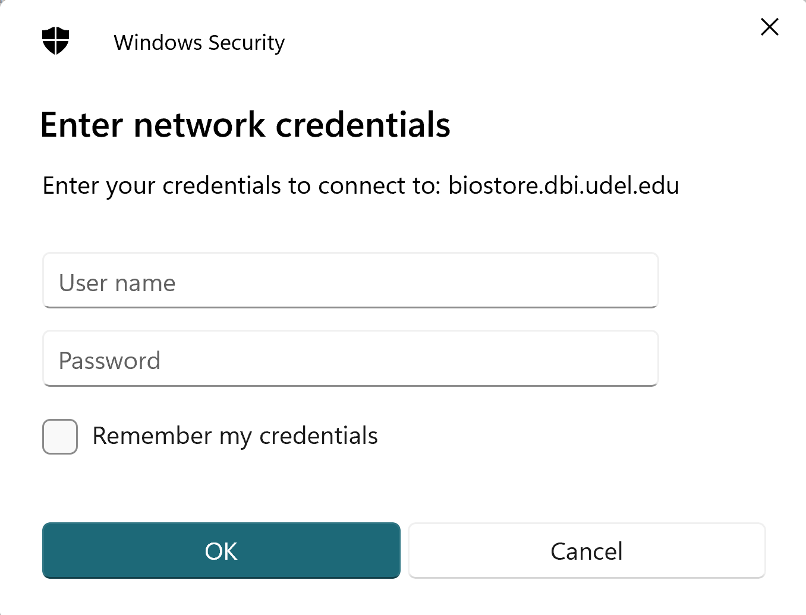
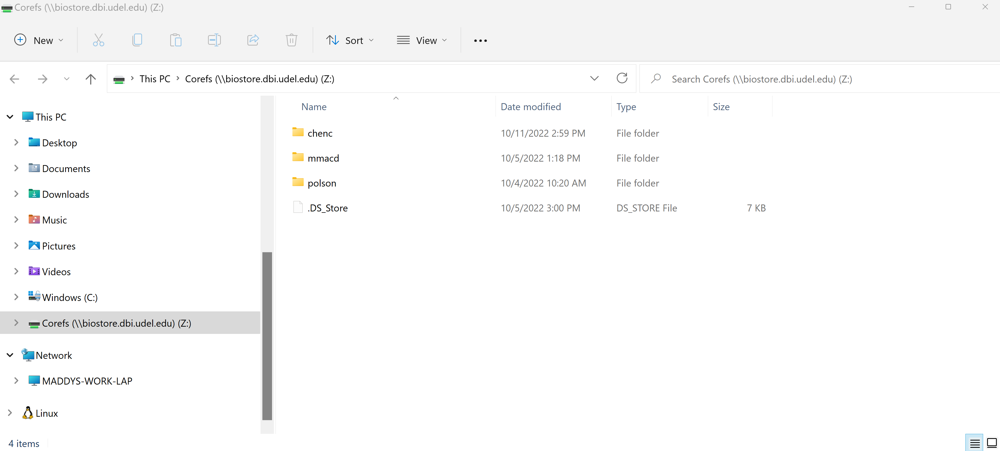

Connecting to BioStore from Windows
You will be using a file sharing protocol called SMB (Server Message Block) to connect to BioSore from your Windows machine. Before you try to connect, make sure that you have completed the steps on the "Getting Started" page and are connected to UD's network. If you are not on campus, this means that you must connect using the VPN.
1. Open up File Explorer.
2. Navigate to 'This PC' on the left navigation pane.
3. Once in 'This PC', click on the three dots at the top of the File Explorer and in the dropdown menu, click "Map network drive".
4. A dialogue box will appear and ask you "What network folder would you like to map?". Here you select the letter of the drive you want to map to. This can be any letter that is not in use. I chose 'Z:' as the server name for BioStore is 'zee.dbi.udel.edu'.
5. In the same dialogue box, you need to add the server and fileshare name to the "Folder:" text box in the format '\server\share. The server is '\zee.dbi.udel.edu\' and the fileshare will be the name of your group (most commonly, the last name of the PI). You will only have access to groups that you are a part of. Hit "Finish".

5. Finally, enter your username and password into the new dialogue box that appears. Your username will be name@ZEEISILON, where name is the beginning of your udel email (the part before @udel.edu). Your password should have been set up in previous steps. After entering your username and password, hit "Connect."

6. You will now be connected to BioStore! The File Explorer window will now display some of the directories on BioStore. You will only be able to access directories where you have permissions and others will appear empty. Your view mode should look something like this:

7. If you want to use BioStore from Windows Powershell command prompt, right click on the mapped drive (will look something like "Groupname (||zee.dbi.udel.edu) (Z:)") in the left navigation pane and then "Open in Terminal". Note: If you are on Windows 11, you may need to choose "Show more options" before being able to see the "Open in Terminal" option.
8. If you want to use BioStore from WSL (Windows Subsystem for Linux), follow the steps above (except for 7) and then open WSL. Type sudo mount -t drvfs Z: /mnt/z. You will be requested for your linux user's password. DrvFs is a filesystem plugin for WSL that enables WSL to mount drives under /mnt. Once you are done with the mounted drive on WSL. unmount using "sudo umount /mnt/z"
You will now be able to use BioStore from either your file browser window, windows powershell, or WSL. When you are done using BioStore, you can disconnect from the server by right clicking on the mapped drive in the left navigation pane and clicking "Disconnect". Note: If you are on Windows 11, you may need to choose "Show more options" before being able to see the "Disconnect" option.